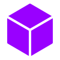
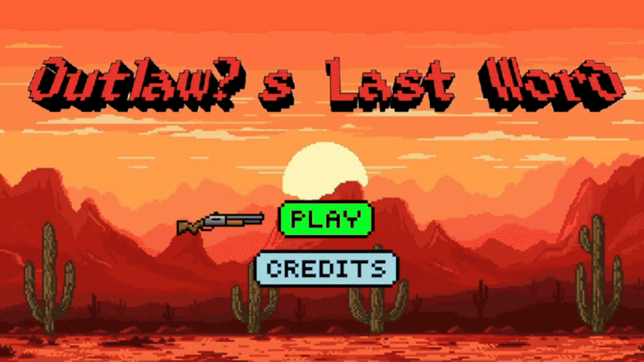
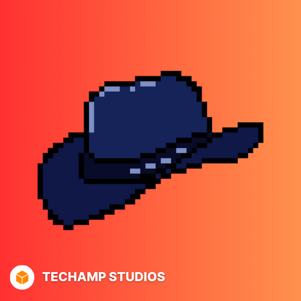
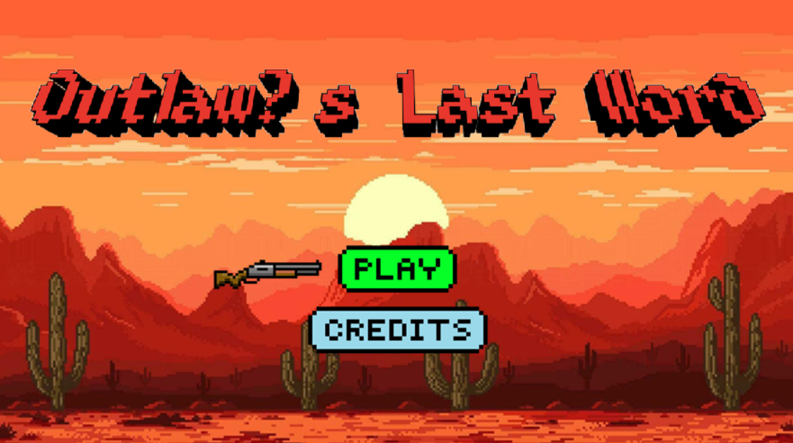
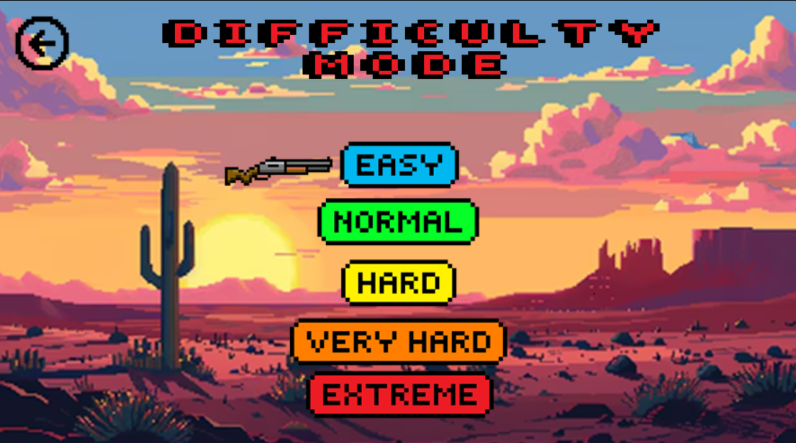
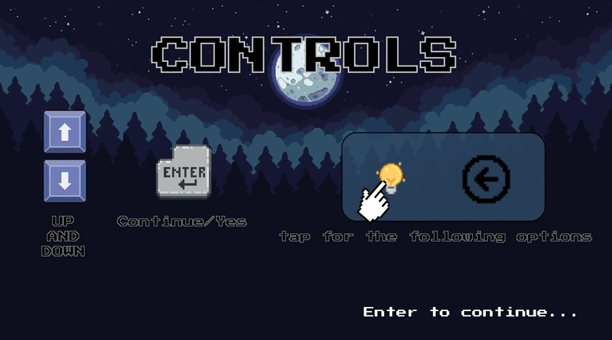
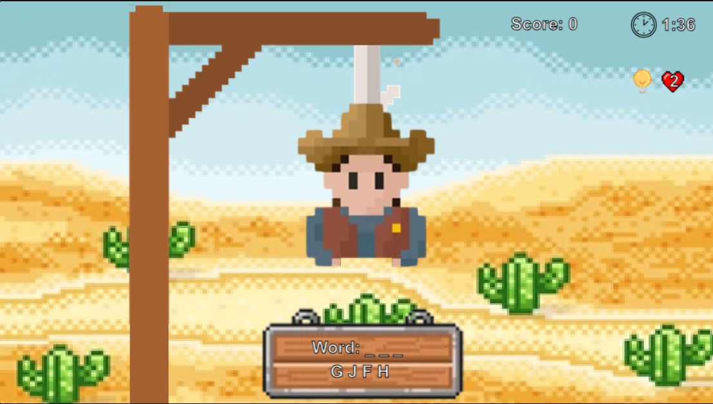
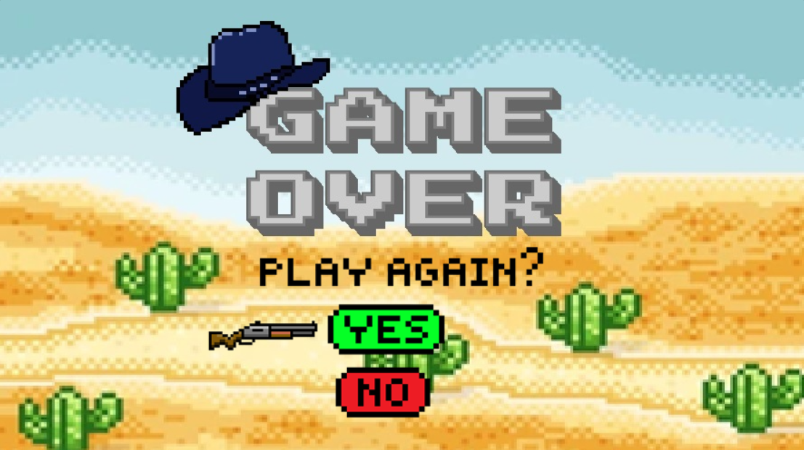

Embárcate en una emocionante aventura llena de palabras, desafíos y suspenso. Resuelve las adivinanzas y enfrenta al temido forajido en una batalla de ingenio mientras descifras las palabras secretas para salvar el día.

TeChamp Studios
Embárcate en una emocionante aventura llena de palabras, desafíos y suspenso con The Outlaw's Last Word. ¡Resuelve las adivinanzas, enfrenta al forajido y demuestra tu habilidad para descifrar las palabras antes de que sea demasiado tarde!





¡The Outlaw's Last Word es una emocionante aventura de palabras llena de acción y suspenso!
Lanzamiento oficial: 15 abr 2025
El último aliento del forajido se ha pronunciado.
¡Únete al desafío y pon a prueba tu ingenio para resolver las palabras secretas mientras enfrentas al temido forajido en una batalla de adivinanzas!
Disfruta de The Outlaw's Last Word en tu PC con Windows, donde podrás resolver las adivinanzas en pantalla grande y poner a prueba tus habilidades en esta emocionante batalla de palabras.